|

Sven Co-op features monster-replacement technology, allowing level designers to add unique monsters to their maps (e.g. Axis soldiers in AfrikaKorps, sharks in Incoming). Sometimes these monsters may be similar to generic Half-Life monsters, but in other cases they may be stronger, faster or have new attacks. When playing a new map, you can never be certain of what you might find yourself up against...
Black Ops Osprey
Race: Human
Threat: High
Weapons: N/A
Special Abilities: Can drop reinforcement squads of Black Ops into an area
Role: Support
Aim for the Engines on either side of the Osprey to kill it.
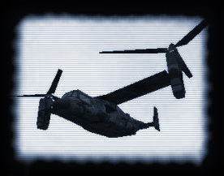 Voltigore
Race: Race X
Threat: High
Weapons: Front claws; Long-range zap-ball attack
Special Abilities: Explodes on death
Role: Heavy Assault
This guy is very tough with powerful attacks, try to take him out with heavy weapons from a long distance or set traps.
Stay away from the Voltigore when it dies, as it has a powerful self-destruct mechanism.
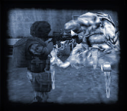 Baby Voltigore
Race: Race X
Threat: Low
Weapons: Front Legs
Role: Cannon Fodder
The Baby Voltigore might not have the size, zap-ball attack or the strength of its big brother, but can still be dangerous in large groups.
When there are babies, Mom is usually around. Don't get too distracted.
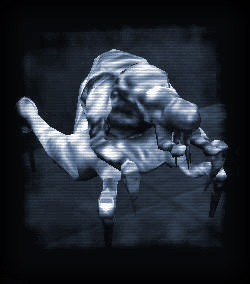 Baby Garg
Race: Xen
Threat: Medium-High
Weapons: Flames; Kick; Punch; Flame Stomp
Role: Combat
This monster is weaker than the normal Garg, and can be hurt by all weapons.
The Baby Garg's kick attack sends its enemies hurtling into the air. In a few cases, you might even be able to use this to your benefit.
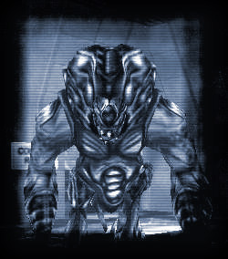 Gonome
Race: Xen/Human Hybrid
Threat: Medium
Weapons: Powerful slash; Gut-throw
Role: Assault
An evolution of the Zombie, the Gonomes are stronger, quicker and a lot more dangerous.
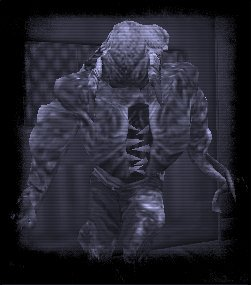 Zombie Security Guard
Race: Xen/Human Hybrid
Threat: Low
Weapons: Claw Slash
Role: Cannon Fodder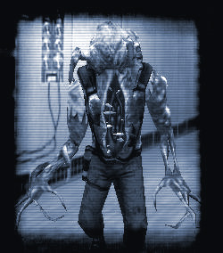 Zombie Soldier
Race: Xen/Human Hybrid
Threat: Low-Medium
Weapons: Claw slash
Role: Combat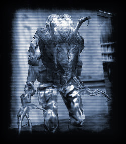 Pit Drone
Race: Race X
Threat: Medium
Weapons: Spike shoot; Claw slash
Role: Combat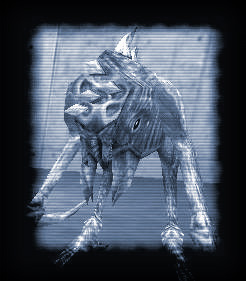 Shock Trooper
Race: Race X
Threat: Medium-High
Weapons: Shock Rifle; Spore Grenade
Role: Assault
Upon death, the Shock Trooper will drop a Shock Roach.
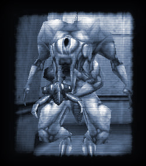 Shock Roach
Race: Race X
Threat: Low
Weapons: Bite
Role: Parasite
After a few seconds, the Shock Roach will die.
Unlike OP4, being attacked by this creature for the first time will not give you the Shock Rifle.
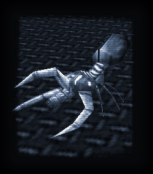 Heavy Weapons Grunt
Race: Human
Threat: Medium-High
Weapons: Assault Cannon
Role: Heavy Assault
The HW Grunt has been beefed up in v3.0. He's now smarter, faster, and can target multiple enemies without spinning his minigun down then up again. A rappelling HWGrunt has also been added.
Use cover, the HW Grunt's Assault Cannon takes a few seconds to warm up before he can fire it.
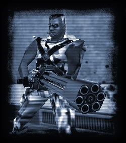 Male Assassin
Race: Human
Threat: Medium
Weapons: Kung-Fu attack; 9MMAR; Sniper Rifle
Special Abilities: Can heal himself when away from combat
Role: Combat
The Male Assassin has heavy body armour, which makes him far more resistant to damage from bullets
While not as fast or as aerobatic as the female assassin, the Male Assassin is still faster than most monsters.
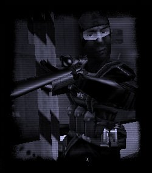 RoboGrunt
Race: Experimental
Threat: Medium-High
Weapons: 9MMAR; Shotgun; Kick
Special Abilities: Immune to most damage
Role: Security
The Robo Grunt has an armoured shell that makes it partially immune to bullets. Explosives have a reasonable effect on it, however, and it has a weakness to Electric and Fire damage.
The Robogrunt explodes upon death, keep well clear.
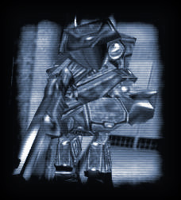